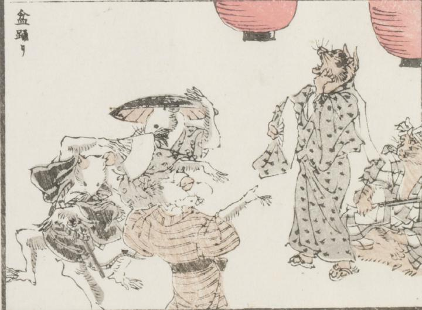

鼠；ネズミ，猫；ネコ

2匹の猫の音曲に合わせて、3匹の鼠が踊っている。1匹の猫は毛皮に座って三味線を奏で、もう1匹は立って扇子を片手に声を張り上げている。傘をかぶった鼠、扇子を持った鼠、子鼠を負ぶった鼠が踊っている。いずれも浴衣を身にまとっている。
著作者：牧墨僊／出典：親書誌：U426_nichibunken_0097：滑稽洒落狂画苑；コッケイシャレキョウガエン／日付：2007／資源識別子：U426_nichibunken_0097_0015_0000
Copyright (c)2010- International Research Center for Japanese Studies, Kyoto, Japan. All rights reserved.